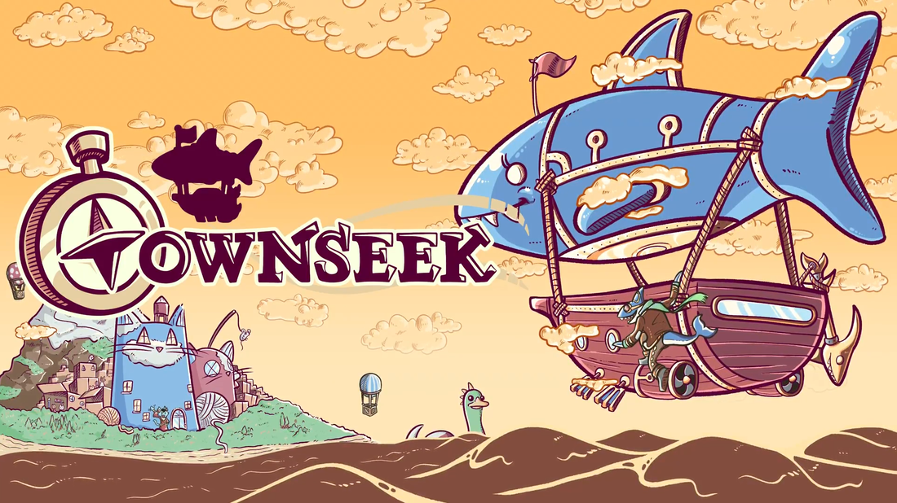

 Born undersea, but with an appetite to soar the skies and explore the world! Now that you've got yourself a reliable airship, it's time to make those dreams come true!
An in development trading and exploration game, born out of Global Game Jam 2021, it includes a soundtrack that adapts to each location and features random combinations of musical elements, leading to huge variation. The sound design was implemented using FMOD and includes UI and effects for all events and interactions, as well as a speech generator inspired by Celeste.
Developed with the team at Whales And Games. Jam version featured by Itch.io!
(2021) Art Fight Duel - Sound design and music: Homage to Art Fight. Jam game rework and upgrade.
(2021) MechaVerse - Sound design and music: "Brackeys Game Jam 2021.1" game jam.